Our Ukrainian Adventure (Written January 2002)
My definition of an adventure is a time where you go through a lot of hassle, inconvenience and pain but can look back on it with rose colored glasses and accomplish something you want or need to do. We wanted to adopt a little girl. We had 2 boys, one of which is adopted, and felt that a little girl would be a nice addition to our family. Also, I'd had a dream about a year previous to all of this, where I saw a dark haired little girl next to a Christmas tree in our home. I'd felt strongly impressed by this dream and felt that it was prophetic. Our Ukrainian adventure started from a conversation with a friend of mine, Mike Sharbaugh where I mentioned our thoughts about adopting a girl. He mentioned someone he knew that helped people adopt from overseas. We’d begun thinking of an overseas adoption because of the cost of domestic adoptions (20K+). We contacted her and she put us in touch with Focus On Children (FOC) based in Cokeville, Wyoming and they helped us with all of the details. We began doing the paper work in the winter of 1999 and had almost everything ready by October of that year. We had to get financial documents, health documents, a home study and Ukrainian adoption applications, fill them out, notarize them and then get most of them state certified.
Why We Chose the Ukraine
FOC provided us with fairly comprehensive information on foreign adoptions in countries from Russia and the Ukraine to Tonga and South America. We chose the Ukraine because of answers to prayers, the care system for orphans there, and cost. Children in the Ukraine are organized into “family groups” and cared for with a fairly high child to caretaker ratio. Our daughter had a 5 to 1 ratio. We would also be able to look at multiple children and select one. Even with this “better” system, most orphans face bleak prospects. They carry the stigma of being an orphan with them and usually end up as criminals. The average life expectancy is 30 years because they tend to die from violence or drug abuse. The cost of a Ukrainian adoption was under $10,000 for all non-travel costs. Most important of all, we felt directed to go to the Ukraine by the Spirit after praying about it for a couple of weeks.
A Lump in the Road
About the time we had everything ready, Tracie was diagnosed with breast cancer. She had a bilateral mastectomy in November of 2000 and began chemotherapy in January of 2001. Just before she started chemo, we finished state certifying everything and were ready to go. We didn’t know that we’d actually go after she was done with her treatments, but wanted to keep the option open. We decided that things would have settled down by September of that year and we’d be able to make a decision then. I don’t want to minimize the difficulty of Tracie’s cancer and her treatment. I’m not going into detail here because it isn’t central to this story. Suffice it to say that she was great and endured the worst the doctors could do with faith and courage.
She was pronounced “cancer-free” in early September and after much prayer, we decided to go ahead with the adoption. We felt that we simply couldn’t leave a child to her fate when we had the means to do something for one of them. So we contacted our FOC people and got things going again. We needed to update our dossier with current employment and health information and worried a bit about the health issues for Tracie. But with the clean bill of health she’d received in September, things went smoothly.
Here We Go, With A Lot Of Help From Our Friends
Reality hit us in the face the first week of December when FOC told us to be in the Ukraine by December 13th. We got the airline tickets, a stack of official documents and a mountain of donations from friends, family and members of the Mendon Utah LDS Stake and left at 8:25 in the morning of the 10th. Tracie and I were feeling a lot of stress that day. We were fortunate to live in an area where we had a lot of friends in our LDS ward that had volunteered to help. Mat, our 14 year old would stay at home and have an older neighbor boy staying with him who was more responsible than him. We'd known him and his parents for years. He lived 2 doors down the street so they’d actually spend a lot of time at their house, but sleep in ours. Zac, our 6 year old, would stay at several Ward member’s houses who had sons (his friends) his age. Our next door neighbor is the Bishop of our ward and had promised to keep an eye on Mat too.
Tracie asked for a blessing the night before we left and I was again thankful for the priesthood I hold through which Heavenly Father can give us guidance, direction, comfort and strength. It was a wonderful blessing in which I promised Tracie that she’d feel a “strong confirmation” when we found the right child. We were concerned about bringing a young child into our home that had been institutionalized and exposed to who knows what kind of emotional damage. How would this affect our 2 children, Mat and Zac? How would having a non-English speaking child affect Tracie after all she’d been through in the last years? Only through direction of the Spirit could we hope to find a child that would fit our home and provide her with a stable loving family.
Oksanna in Krasnokutsk
So off we went from Salt Lake City to Minneapolis to Amsterdam to Kiev in about 24 hours. The FOC folks met us at the airport. First, Alex smoothed our way through customs and handed us off to Yuri, Vasili (we called him Vasa), Oleg and Lesya. This picture 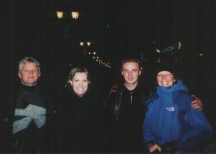has Vasa, Lesya, Oleg and Tracie on a picturesque street in Kerch, on of the oldest cities in the world. They just celebrated their 2600th birthday that year. The second picture is Vasa and his torture-mobile where we alternately froze and then froze some more as we traveled over about 3000 miles in the beautiful Ukraine which reminded me of the Midwest where I spent many pleasant summers growing up. We climbed into Vasa’s van and went to an apartment where we would stay whenever we were in Kiev. The next day we went to the National Adoption Center or AC. There we looked at the pictures and profiles of children in orphanages all over the Ukraine. Tracie felt impressed by one little girl, but she was in an orphanage in Kerch in the Crimea. 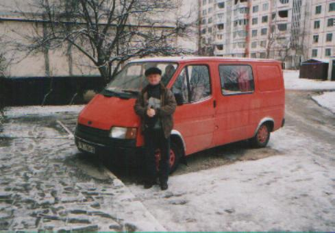 This is a large island in southern Ukraine that lies on the Black and Azov seas. It was over 1200 kilometers (720 miles) and a 16-hour drive over hill and dale of the Ukrainian countryside. We decided to visit a little girl only 600-Km east in Krasnokutsk.
Travel in the Ukraine was an interesting experience. All but the main highways are in terrible shape from ice heaves. The make the roads so rough that Vasa couldn’t drive over about 60 Kph (35 mph) so going 600 Km was a long trip. Ukrainian drivers tend to drive wherever they please, ignoring those pesky lines on the road. Typically, Vasili would be driving down the middle of the road. As a car would approach from the other direction he’d wait until the last minute, move over to the right side of the road to pass then move back to the middle of the road. When passing another driver, he’d honk a couple of times and move to the left side of the road. The other driver would move over to the right while Vasa passed and then each back to the center afterward. They seemed to have about the same number of accidents as we have in the US so I guess it works for them.
We got to Krasnokutsk and met Oksanna, a cute little 5 year old who lived in a small group of 8 boys and 2 girls. Ukrainian orphanages organize their children this way to make them a part of a “family” and bring some normalcy into their lives. Each group usually has about 7 caretakers who operate in shifts with 2 caretakers on duty most of the time. I was very impressed with how the children are so well cared for. Their main problem is a poor diet and lack of a real home. We liked Oksanna very much. 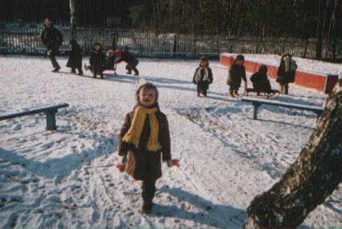 We were under a fair amount of time pressure. Normally, the process takes about 3-4 weeks, 10-12 days if you give the various workers “expedite fees”. We had 12 days before things shut down for the Christmas holidays and we had to wait 2 extra weeks until everyone came back to work. So we prayed about it and although we didn’t feel a “strong confirmation”, we did feel at peace and decided to adopt Oksanna. She is pictured below on the little playground at her orphanage. Notice how warmly everyone is dressed.
We returned to the orphanage that afternoon and played with Oksanna and the other orphans while Vasili drove Oleg around to set the adoption in motion. I felt some unease that afternoon and Tracie felt an almost oppressive negative feeling about Oksanna. The more we interacted with her the more I saw symptoms if Reactive Attachment Disorder, a disorder that affects a child’s ability to form emotional bonds to others. I’d researched it before we left for the Ukraine and recognized several red flags. After we left the orphanage and returned to the home we were staying in while in Krasnokutsk, Tracie told me we couldn’t adopt Oksanna and explained her feelings. I told her of my reservations and we decided not to adopt Oksanna after receiving a confirmation in prayer from Heavenly Father. We realized that we’d allowed worldly considerations (time pressure) to cloud our judgement and returned to Kiev for another visit to the AC.
Anna in Novograd-Volynskiy
We again were impressed by the girl in Kerch, but again intimidated by the 16-hour drive and went to an orphanage in Novograd-Volynskiy, 300 Km west of Kiev. There we met 3-year-old Anna who suffered from brain damage from hypoxia during delivery. She’d been treated and was improving, but was still a 1 year old developmentally. The folks at the AC had called the director of the orphanage and were told that Anna was normal. What we didn't know was that the orphanage was a handicapped orphanage and Anna was "normal" by their standards. I fell in love with her immediately. However, Tracie and I had decided that we wouldn’t adopt ANY child unless we felt that “strong confirmation” through the Spirit. We'd learned our lesson in that regard. Since we didn't feel that confirmation from the Spirit, we didn't adopt Anna. So we left some of our donations with the very kind staff of the orphanage and headed for Kerch (via Kiev). Below is a picture of Oleg, the director there at Anna’s orphanage, Tracie and Lesya. Notice that the director has her mouth closed. Dental care in the Ukraine isn't very good and many people have lost a lot of teeth, like the director.
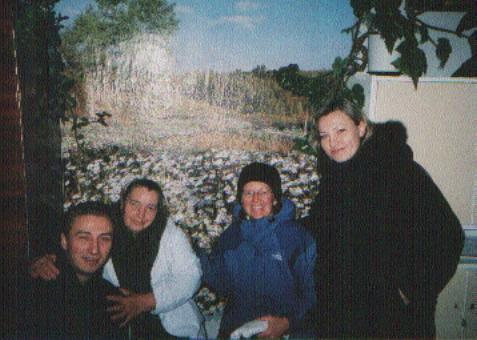
Anastasia in Kerch, But First More Adventure
We finally did what we should done in the beginning and went to Kerch in Crimea. The Crimea generally has mild winters. The occasional snow doesn’t stay long and it generally rains during the winter there. But, for 3 days before our trip there, they’d been in the grips of a “storm of the century”. They’d received over a foot of snow and had 30-45 mph winds that had drifted the snow over the roads. The section of the road between Feodocia and Kerch was especially bad. As we later found out, there were 9-12 foot drifts in some places. Vasili was only able to drive 30-45 mph much of the way and after we passed through Feodocia we got stuck in a drift that had also snared another car, a bus and 2 large trucks. After 4 hours of digging and pushing we got through with the help of a local road crew and drove another 2-3 miles only to get stuck in another frozen vehicle trap. All of the digging and pushing in temperatures around 15 o F with a wind chill of around –40 oF was taking a toll on all of us, especially after driving all night to get there. We were finally dug out by the same road crew and decided to return to Feodocia and take a train to Kerch. Oleg found a local lady who was willing to let us wait out part of the storm while Vasili did repairs to his van. He’d damaged the exhaust system in the last snowdrift. The picture below is the little widow lady we spent a few hours with near Feodocia.
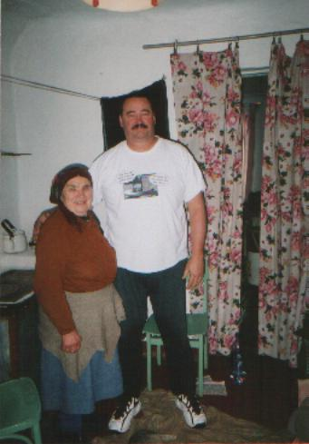
The lady we stayed with was a widow who’d lost her husband some years before when he fell asleep while smoking and set fire to his bed. She was now living on a 60 Grievna a month pension. A Grievna is worth about $0.20 so she was receiving about $12/month. Just enough to keep her and her old cat alive and relatively warm. She had a cast iron stove that took coal and a bed in her 2-room house. We talked with her for about an hour and a half until Vasili was done fixing the van. Both Oleg and I left her some money so she could have a bit easier time of it for a while and went to the train station. When we boarded the train we took a compartment and laid down for some sleep. Each compartment had 6 fold-down pallets and a large table on one side of the car, 2 fixed seats and a small table against the other side of the car. The pallets were solid wood with a leather covering (no padding). Even with such hard beds, after 16 hours on the road and about 5 hours of fighting snowdrifts we fell asleep immediately.
So we left Vasili in Feodocia in a hotel. Vasili would come to Kerch the next day after the army cleared the road using tanks! Tracie remarked that we’d now traveled on “trains, planes and automobiles”. Late that night, we met with the director of the orphanage and learned about Anastasia. We were surprised to find out that she had a 13-year-old brother (Maxim), a fact not given to us at the AC. Normally they will not split up siblings, but in this case they would because of the age disparity. The director arranged for an apartment for us. Both Tracie and I were exhausted after the trip, but got only a few hours of sleep that night. We both lay awake most of the night thinking, “What do we do about Maxim”? About 5 AM we got up and talked about it. Every time I thought of him, I asked myself, “How can we leave him”? As we talked I found that Tracie felt the same way. We both felt that Anastasia would be THE girl that Heavenly Father had directed us to adopt. After more prayer, we decided to adopt Maxim as well if we still felt the same way after meeting him.
Anastasia and Maxim
When we went to the orphanage and met Anastasia we both felt the comforting “strong confirmation” promised in the blessing. She’s a sweet little 5 year old with dark hair and pretty dark eyes and cute dimples. We spent a couple of hours with her in here little group and then went to meet Maxim. We had found out that both Anastasia and Maxim had been in the orphanage for 20 months after the death of their parents. So Anastasia had been 3 and Maxim had been 11 when they’d lost both parents. Maxim was rather small for his age. He came into the doctor’s office and we could tell that he was nervous. The doctor told him that we were here to adopt a child and that we were going to adopt Anastasia. He immediately began to cry. Most people take about 2 years to recover from the death of an immediate family member. He’d not only lost his dad and mother, who he had loved dearly, but had been cast into an orphanage where he had to live separate from his sister and deal with the rigors of competition in a tough environment.
I could see what he was thinking, “I’ve lost my parents, got stuck here and now I’m going to lose Anastasia too”. He also may have thought that he was being adopted and our statement that we would adopt Anastasia may have dashed his hopes. He was in shock. So when we asked him if he’d like to come with us too, his reaction was a typical teenage shrug. The doctor took him into another room and talked to him. He told her that he had 2 more brothers and a sister somewhere in the Ukraine and wanted to stay here. I felt that with a bit of time he’d change his mind, but let things stand as they were. We’d adopt Anastasia and leave Maxim here. We again turned Oleg loose to churn through the Ukrainian bureaucracy. As I suspected, Maxim changed his mind later that day and we started planning on how to handle his adoption. Unlike Anastasia, we had no paper work on him. This would delay us past the Christmas holiday. The director advised us to wait and return for him the next summer. We felt that would be the best solution too. It would give Maxim time to adjust to the idea of a new family, it would give us time to integrate Anastasia into our family and prepare to receive him into our home. The director had also promised to teach Maxim as much English as possible. Below is Maxim who looks very much like his sister.
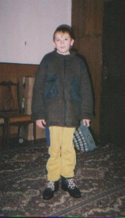
There were a lot of very cute kids in the orphanage. Some were available for adoption, some were being adopted and some were not available for various reasons. One little girl was unavailable because her father was in prison and wouldn’t give up parental rights to her. The other little girl there had been there for only 3 weeks. She’d been abandoned by her parents and had a “heart condition”. This made it unlikely that a Ukrainian family’d adopt her. The photo below shows the girls and a couple of boys there. The girl just right of Tracie is Irena whose father is in prison and the girl just right of her is the one with the heart condition. An Italian family is adopting the little boy farthest to the right. The photo was taken after Tracie gave some bows to the girls in the group and one of them put one in her hair.
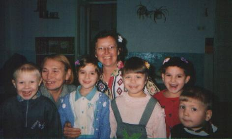
The orphanage was really well done. The facilities were fairly nice and everything was well organized. The main thing these kids lack is a stable family and a good diet. We saw what they eat and it wasn’t all that great. They had unsweetened oatmeal for breakfast, soup for lunch, rice or maybe pasta for dinner. I know that when we brought fresh apples or oranges they ate them like they were manna from heaven. Below they are eating Solanka a traditional Ukrainian vegetable soup with hard bread and tea. They had the hard bread and tea with all of their meals.
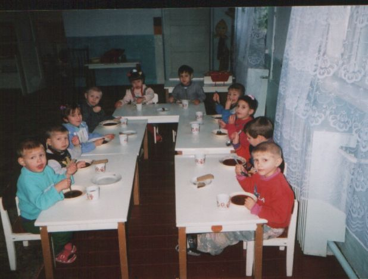
The adoption was a unique experience. Notary publics in the Ukraine are very well paid powerful people. In many ways they perform many functions similar to a lawyer in the US. They were the most difficult people to deal with in our experience. One woman who we named the “fur queen” because she wore fur pants, a fur vest and had a full-length mink coat on her very expensive chair. Her office was large by US standards and furnished with very expensive furniture by ANY standard. She had her office personnel jumping like first-year cadets at a military academy. When she yelled, some one jumped, FAST! We used notaries to make copies of our official documents so the court could have them in their records so we dealt with several notaries in several regions.
We went to court to finalize the adoption on December 24th. It was fairly quick and painless. We had to wait until the next day to get her new birth certificate naming us as the parents. I’m not sure why they issue a new birth certificate, because they keep the old one too. After we had official copies of that too, we went to the orphanage on Christmas day and got Ana. Having children adopted was not unusual at the orphanage. While we were there, a Spanish couple was adopting a little boy and 2 other children were in the process of adoption by Italian and French couples. So the kids knew what was going on.
Anastasia’s Trials
Getting adopted has to be a traumatic and terrifying experience for a child, especially when the new parents don’t speak the same language as the child. The signal that a child was leaving the orphanage for good was when the parents came and changed them into new clothes. We found this out when we came to take Ana to get her passport photos. We brought some new clothes so she’d have something nice for her photos. The orphanage cloths were not rags, but they were fairly well used and threadbare. She knew that we were going to adopt her and she’d be going to the USA with us. But there is knowing and then there is doing. She started crying when we started to get her changed. It took about an hour for things to calm down. The helpers at the orphanage changed her into a nicer dress they had and that helped calm her down. We got 2 sets of pictures, one for her passport and one for her US immigrant visa that required a different photo angle. She was crying in only one of them. When we came to really take her, she didn’t cry again. It was 3 days later, and I think she’d had time to get used to the idea of leaving the orphanage with her new parents.
Below are 2 pictures taken when we took Ana from the orphanage. Notice the shoes in the caretaker’s hands who is talking to Lesya, we’d just changed her and she was still smiling. It was a different story when we actually took her out. The second photo is just before we got into Vasa’s van and drove off. Notice how her head is bowed. She’d been crying and typically when she cries, the her head drops and she looks down while the tears flow. It is what I call her "whipped puppy" mode.
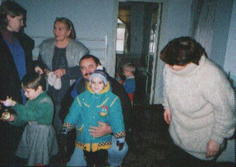
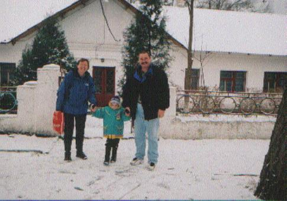
One of our biggest concerns was the trip to Kiev. 16 hours in a van is rough for anyone. A five year old just removed from her world by strangers was not a pleasant
prospect. So we came armed with
Benedryl which doctors had assured us was harmless and would put her to sleep fairly quickly. I know about the later effect because of a time when I had to take
it to treat some allergic reactions. Surprisingly, she traveled with out any real problems. She did throw up once about 2 hours into the trip, but I think that
was more due to nerves than real carsickness. We first had to travel to Simpheropol, the capital of Crimea to legalize the adoption papers and get her passport.
There we spent our first night with Ana. She was very insecure with us and wanted to stay with Lesya or Oleg since they spoke her language. But we insisted she
sleep with us and went through about 1 1/12 hours of fairly severe crying over it. We finally decided to use the Benedryl and she went to sleep. Here is the lady
(her shopping buddy is sitting down) we stayed with in Simpheropol. She acted like Ana’s Babooshka (grandmother). Notice the MacDonalds balloon.
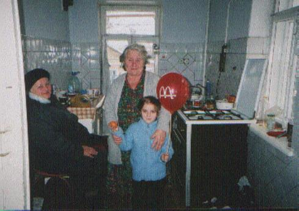
One of the things that helped us deal with the different culture was MacDonalds! They are all over the place in the larger cities of the Ukraine. Most of the time we ate cold sandwiches with cold cuts, cheese and bread. We never found anywhere that sold any kind of beef. All of their “sausage” was pork based so we were starved for beef. Enter the Big Mac. We found that Ana would eat chicken nuggets and French fries. She also had never had pop before and had a few interesting experiences until she learned not to drink too much at one time. The trip to Kiev was uneventful and we were overjoyed to get back to our apartment in Kiev. It actually had a hot shower (we used heated water in a bucket to bathe in Kerch), it had a real kitchen with a refrigerator, range and toaster oven. And most of all, it had privacy. We’d been living in the same apartment with our FOC facilitators everywhere we went and it was very nice to be by ourselves again. It was especially nice to be alone with Ana.
The first day we were back, we found out that Ana wasn’t happy about bathing. Tracie tried to bathe her while she took a bath and Ana immediately threw a major fit. She wouldn’t sit down in the tub and really started screaming when she tried to rinse shampoo out of her hair. I had to come in and lean her back while Tracie poured water over her head to rinse shampoo out of her hair. I’ll never forget the look of complete terror in her eyes. Fortunately, she slowly got better and as of January 7, 2002 is able to sit by herself in the tub. She still hates getting her hair washed. We thought that maybe a shower would be better, so I gave her a shower. I got in with her wearing sweats and a T-shirt. You'd have thought we were skinning her alive. I don't know what happened to her in the orphanage at bath time, but it must have been traumatic for her.
Expedite Fees
We tried, or should I say the FOC folks tried, to get our paperwork done in Kiev in time for us to leave before the New Year break, but there is only so much that “expedite fees” can do. Maybe I should say a word in this regard. Normally, it takes weeks to do all of the paper work involved in an adoption. For example, a passport takes 3 days. We were able to get a passport in 2 hours by paying an “expedite fee” to the official preparing the passport. This appears to be a bribe, but we considered it to be fees paid to a person to have them do extra work so that we could have our documents done quicker. This may be splitting ethical hairs, but it allowed us to get our adoption done in 9 days instead of 3 weeks. It also allowed us to leave Kerch with Ana immediately instead of staying for 2 weeks after the court adoption, as is normally the case. We spent a bit over $2000 on such fees.
The Adventurous Trip Home
The trip home was another adventure (definition: a time when you go through a lot of suffering which seems less odious on later reflection than when you’re doing it). We had our reservations from Salt Lake to Kiev and then returning from Warsaw to Salt Lake when we left. But we had no ticket from Warsaw to Salt Lake for Ana and no tickets at all from Kiev to Warsaw. We got a ticket for Ana in Warsaw because they gave us an “adoption discount” there. But we got the tickets from Kiev to Warsaw from a travel agent in Kiev who didn’t speak English. She booked us for a trip on January 31, 2002 instead of December 31, 2001 even though Yuri explained to here when we wanted to travel. Unfortunately, I didn’t look closely at the tickets and catch the Jan instead of Dec in the date field. We found out about the problem after the FOC folks had dropped us at the airport and gone.
Our only real option was to travel to Prague, spend the night there and then travel to Warsaw the next day. So that’s what we did. Because Ana had a Ukrainian passport and no Czech visa we were not allowed to leave the Prague airport. The Czechs are pretty anal about their rules. Fortunately, there were childcare rooms where there were beds for each of us and we didn’t have to pay for them either! We finally got to Warsaw and breezed through the US Embassy visa application on January 2. We left for the US on January 3rd and got home almost 24 hours later. Ana was a real trooper through the whole thing. We did feed her some Benedryl during the 8-hour flight from Amsterdam to Minneapolis. And we did have one bag left in Amsterdam that got home 2 days after we did. But, all in all it was an uneventful though grueling trip. Below is a photo of Ana when the immigration agent in Minneapolis stamped her visa, officially making her a US citizen.
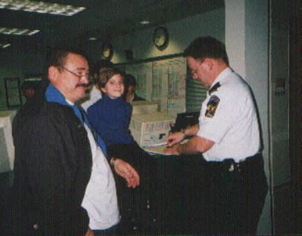
The Lord’s Hand in All Things
Every time we ran into a roadblock, there was a way that opened for us to move ahead and we feel that this was the Lord’s hand manifest to us. We felt the guidance of the Spirit at every turn. Even though we made mistakes, we were able to rectify them through that guidance. This help began long before we went to the Ukraine. We financed this by re-financing our home. The timing of the loan allowed us to get the lowest interest in 40 years and will allow us to pay off our house in 8 years.
The Real Costs
The $9600 cost of the adoption originally quoted us by FOC wasn’t anywhere near what the actual cost was. We spent that much alone on travel on airlines, a train, Vasa charged us $0.24 per Km and we spent a fair amount on food and lodging. We think that when all is said and done the actual cost will exceed $18,000. Add to this the time I lost at work where I bill by the hour, and a foreign adoption is just as expensive as a domestic adoption. The upside is that you get to pick your child, and ... its adventure!
The Bottom Line
So would we have done it if we knew before what we know now? We think so. Orphans in the USA are still in the USA where our poverty level is above most countries’ middle-income level. They don’t face the terrible obstacles the foreign orphans do that cause them to have such short desperate lives. We’re planning on adopting Maxim, Ana’s brother when we can find the means and are talking to FOC about the issues there.
Oh, one more thing, never go anywhere in the Ukraine without your own TP. Toilets like the one below haven’t any. BTW, used paper goes in the bucket, not the hole!
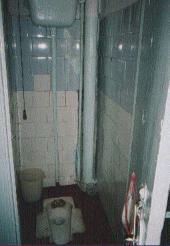
And this is the deluxe flushing model.